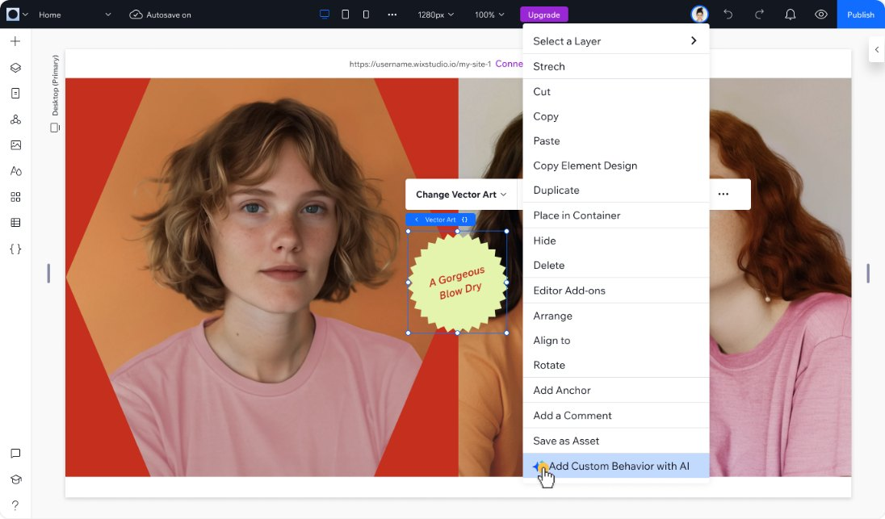
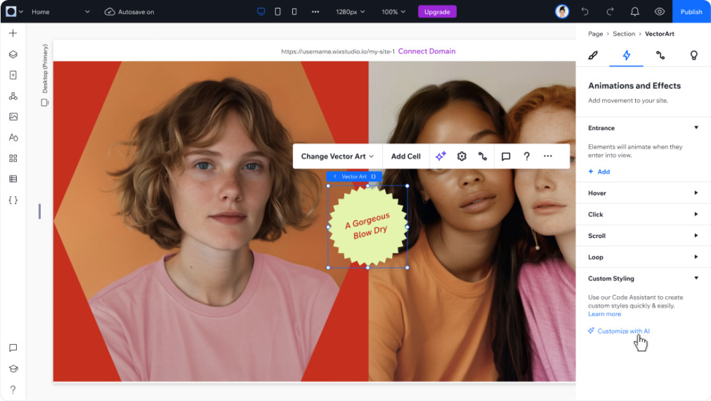

Help where you’re already working
What I saw
80% of conversations started from the right-click menu or the element’s Inspector panel, while someone was editing a specific element, not while thinking about code.
The choice
Since the chat had to stay in the code panel, I couldn’t make the panel easier to find. Instead I brought the way in to the element people were already pointing at, with that element passed in as context.
What the data said next
Intent showed in the numbers. About half of the conversations started from the properties and CSS panels led to added code, compared with about a quarter from the right-click menu. That made the case for more entry points where people are already working.

